BE4-01
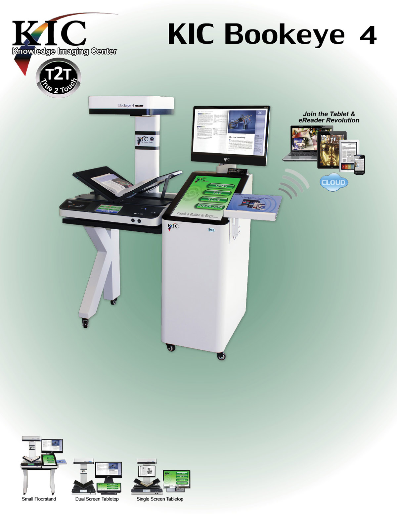CAPTURE, COPY, FAX & COLLATE BOOK CONTENT
Peerless Face-up Book Scanning
for the 21
ST
Century Library
KIC is the most essential piece of equipment in our library.
Study, Report, Research, Collaborate ... Digitally
KIC Bookeye 4 is an indispensable tool for research, study and production of enhanced quality reports and papers with crystal clear color and black & white excerpts from books, magazines and very large journals. In addition, as a UDSA compliant digitize-on-demand system conveniently located among the stacks, KIC can be used as an ad hoc digitization station by Interlibrary Loan departments.
With its 600 dpi option, KIC Bookeye 4 sytems are perfect as shared resources, capturing the finest details for digital archival and preservation.
The KIC Bookeye 4 can capture 20 book pages per minute for instant access on tablets, notebooks, smart devices and easy transfer to desktop PCs and servers. With a bed size more than 40% larger than its nearest competitor, Bookeye 4 is also the only high resolution scanner in the world that supports both v-cradle and flat modes, and can scan material as large as 24 x 17 inches.
Photocopiers, fax machines, PCs, monitors and keyboards clutter up otherwise beautiful libraries across America. KIC Bookeye.4 reverses that trend, replacing copiers and fax machines and adding scanning in a single machine with clean lines and efficient design.
BE4-02
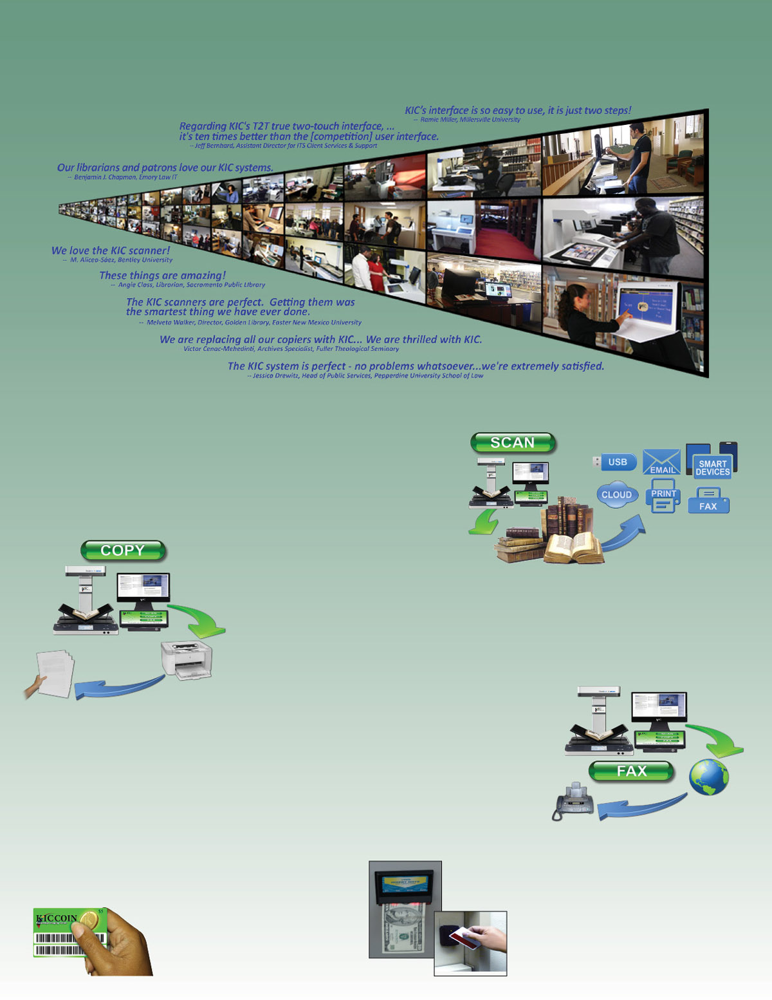KIC Serves Over Half of Students at Universities in America
In the U.S. alone, KIC serves over four million students at the top "brick and mortar" (non-online) colleges and universities. With the introduction of the KIC BookEdge, KIC Click, and KIC Click Mini, KIC is now affordable for virtually all institutions of higher learning and full-service public libraries. Last decade, libraries typically 'added' several KICs, but since 2010 libraries have begun to replace their entire patron-use copier fleets with self-serve book scanning systems.
A True Digital Age Multifunction System for Academic & Public Libraries
Book Scanning
Students at academic libraries want speed, and DLSG offers the fastest book scanners on the market. Patrons at public libraries need simplicity, and KIC provides three of the simplest possible user interfaces, one exclusively for scanning, one exclusively for copying and one exclusively for faxing. And KIC's best-of-breed power user interface is only a touch away.
Copier Replacement
While multifunction copiers are partly digital, they are big mechanical machines with big
maintenance issues and tiny touch screens. As a copier replacement, KIC eliminates copier failure/service problems and provides very large touch screens and view screens that are larger still. Organizing (collating, clipping, rotating, etc.) pages on a huge touch screen is much easier than shuffling paper.
The digital age has steadily driven down the demand in libraries for paper copies to levels that make it increasingly difficult to justify copiers. KIC self-service scanning systems reduce copier use further - to the point that attaching a small laser or ink jet printer is sufficient. KIC
systems also handle much larger materials than copiers, and they scan books without damaging them. However, the most compelling benefit of KIC over copiers is KIC's speed, due mainly to its face-up scanning design, which is not only significantly faster, but far easier to use.
Self-Serve Fax
KIC's huge touch screen and larger view screen make faxing extra easy. Users can compose, review, clip, crop and change brightness and contrast of the pages of a fax before sending. KIC's step-by-step process is designed for easy operation by even the most timid users. All you need is an internet connection, and DLSG will provide the rest at a cost so low that fax revenue can pay for the KIC system in a few years or less.
KIC Coins
Printing copies and faxing have per page costs that normally must be passed on to the user. KIC has a free, built-in method of charging users for copies and faxes.
Simply print wallet-size "KIC Coins" on regular letter-sized paper in any denomination that you like, cut them out, and sell them to users at the circulation desk or wherever you collect fees for late book returns.
KIC Compatible with Copy Card & Cash Systems
All KIC systems are compatible with all standard copy card and coin-op devices. Since KIC transfers images to users' computers electronically, costly expendables are avoided, even for color! The library can opt to keep all revenue it collects.
BE4-03
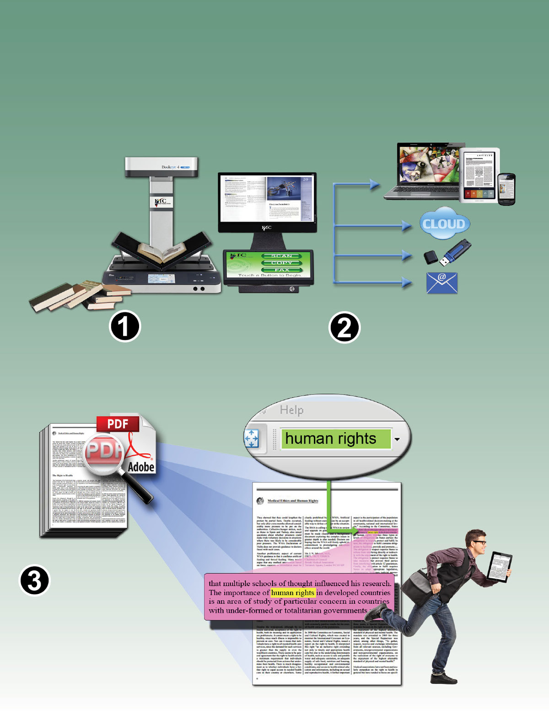KIC Makes Your Print Collections Searchable
Search hundreds of pages of PDF or text files created in just minutes using KIC Bookeye 4
Users need only locate the volume(s) that they expect to contain the information they are seeking, scan selected sections and output either a searchable PDF file or a text file. These files can easily be searched for various keywords.
Keyword searching is becoming an indispensable capability that significantly improves the quality and efficiency of researching print collections.
- Access more sources DIGITALLY
- Find information faster
- Deliver results in digital form
- Get your research in digital form
Scan selected excerpts
from multiple sources
in just minutes.
Output text or searchable PDF directly
to a tablet, e-reader, PC, smart phone,
Cloud storage, USB, or email.
Search all scanned pages
in an instant for various
key words and...
...be on your way.
BE4-04

In case you didn't know ...
...what you can do with scanned images
Enhance Reports
Place books face-up on
KIC Bookeye 4's large bed
& capture two pages at a time
- much faster than flatbed
scanners and copiers.
Use whole pages or clip
selected pictures, graphs,
text, etc. using KIC's large
touch screen.
Save scanned images to USB
flash drive or cloud storage,
send them via email address
or transfer images directly to
tablet, notebook PC, or smart
phone.
Enhance reports in a word
processing program. Drag de-
sired images from a flash drive,
Cloud storage or email directly
into a word processing pro-
gram, or save images to your
computer desktop and use the
'insert picture' function.
Once images are imported
into a word processing pro-
gram, you may want to resize
or reposition them or select
from several ways that your
text can wrap around the
pictures.
For Study
Quickly scan many pages
to take with you and study
at your convenience in
the comfort of your home
where you can read, search,
markup, and print at your
leisure.
Book Excerpts
With KIC in your library,
instructors are no longer
restricted to a single text
book. They can freely
assign many excerpts
from many books without
adding to the students'
already high cost of text
books.
Course Materials
Class Notes
Class Handouts
Personal & Family Documents
Library patrons bring loose
paper from home to scan,
fax and send via email or
save to a USB device. A
$5 USB thumb drive can
store thousands of important
documents.
Scan Journals for Research
Scan Artwork
Scan Large
Maps & Drawings
BE4-05
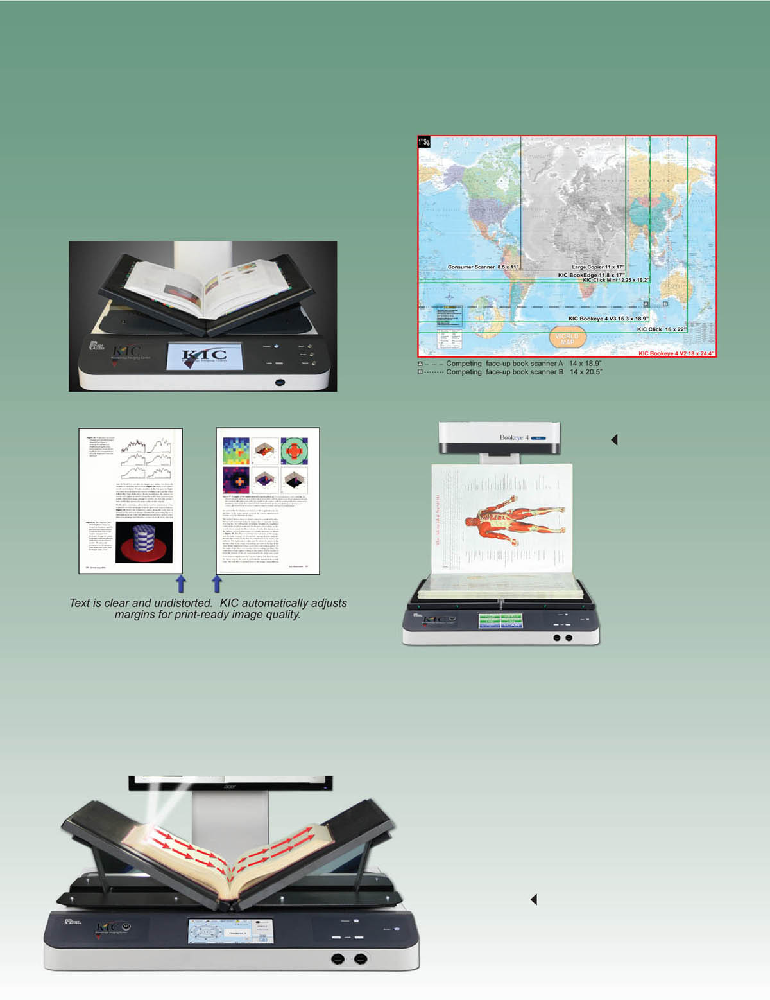Beautiful Images - Fast and Easy, and Nondestructive
Face-Up Scanning is Faster!
KIC Bookeye 4 walk-up scanning stations are face-up scanners that save a lot of time and reduce book spine damage because they capture two face-up pages of a book with each scan and do not require the user to flip the book twice for each page. KIC analyzes each image, and automatically splits it into two separate images. In addition, black edges are automatically removed and the content is straightened, producing clean, professional looking images - important for electronic reserves, course curriculum materials and research reports. These automatic image treatment functions also save a lot of faculty, administrator, and student time.
Capture Area Comparison
The capture area of copiers is about half that of KIC Bookeye 4 while the capture area of typical consumer scanners is smaller still. With a 18 X 24 inch capture area, Bookeye 4 captures it all!
Face-up scanning is faster, easier,
and it eliminates spine damage
Scan Oversized Reference Books
With the view
screen on the side,
the Bookeye 4
neck provides an
ideal bookstop for
scanning very large
reference books.
KIC True2Touch
provides full rotation
capabilities so
that you can scan
in the orientation
that suits you best.
The Bookeye 4 V2's 600dpi Option
With its 600dpi option, Bookeye 4 is the only true preservation quality book scanner that's also ideal for self-service.
To capture moving objects, digital cameras must use array CCDs, which capture all parts of the object at the same instant. That's why affordable digital cameras have fewer than 50 megapixels. And those pixels must be further divided into red, green and blue sub-pixels.
Since books don't move while being scanned, the Bookeye 4 is able to utilize linear CCD technology to produce ultra-clear images with astounding 140 megapixels. Each pixel in a linear CCD includes full red, green and blue sub-pixels. However, high resolution scanning is meaningless if the lens system does not produce highly focused images. Since ultra-high resolution
"spy satellite" lenses are quite expensive, the Bookeye 4 scans from left to right, allowing it to follow the curve of an open book and maintain excellent focus, whether in V-mode or flat mode.
The Bookeye 4's left-to-right scanning allows it to follow the contours of virtu- ally any book, producing better 600 dpi images than other book scanners that claim to produce 600 dpi images.
BE4-06
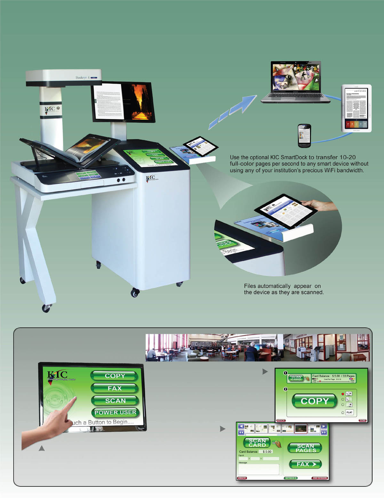KIC SmartDock
TM
The Fastest, Easiest Way to Transfer Images to Tablets, Notebook PCs, eReaders & Smart Phones
For Public Libraries
Introducing KIC to Your Patrons
KIC has a special introductory interface.
For the first year in a new location,
KIC can be configured to display three
or four simple buttons: [COPY] [FAX]
[SCAN] and [POWER USER].
Touching [COPY]
will activate a very simple
'copier' interface with a large
copy button that scans and
immediately prints.
Touching [FAX]
will activate a very
simple 'fax machine'
interface.
BE4-07
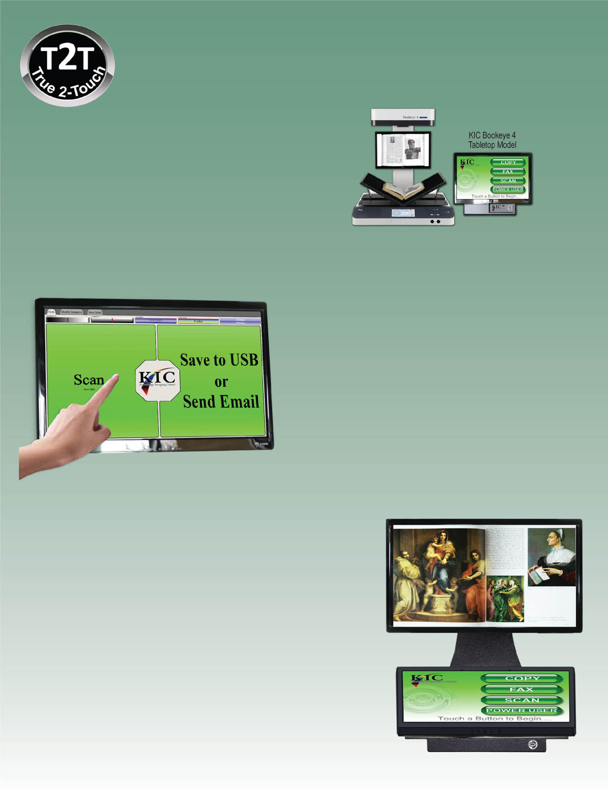True 2 Touch
TM
User Interface
Ease-of-use is a central feature of KIC. Its large, 22 inch touch screen and its large "Scan" and "Save, Send or Print" buttons that occupy a very large portion of the touch screen clearly convey how easy KIC is to use. The Save button defaults to an output method and file format that is selectable by the institution. If a flash drive is inserted, KIC detects this and the output button changes to indicate that it will save to the flash drive. Users can override the default output method by manually selecting one or more other methods of output.
KIC Bookeye 4's high speed is derived as much from its ultra-simple, true two-touch interface as from its face-up design that obviates the need to flip books over and over again during the capture process.
The tabletop model KIC Bookeye 4 has all the True2Touch capabilities of the full-size KIC. It has its own tabletop version of the SmartDock, and of course, an ADF scanner can be placed anywhere on the table. ADA compliance is achieved by purchasing a table with a 30 inch clearance to the floor and a 31 inch height.
KIC Bookeye 4's elegant design puts the full KIC self-serve digitization functionality into a compact and appealing space. Its 17" touch screen and large preview screen and capture surface are at the perfect height for wheelchair access. The KIC Bookeye 4 also offers an optional desktop configuration with a single 22" touch/preview display
KIC's True2Touch
TM
User Interface,
Especially Forgiving for Beginners
- KIC is very agile, and allows the user to jump from just about anywhere in the touch screen system to just about anywhere else, directly and usually with a single touch. This modern, 'modeless' design is easier to use, but difficult to create.
- KIC's large buttons and controls are easy to use, even for people with unsteady hands.
- KIC gradually expands and contracts controls such as brightness, con- trast and DPI so users can easliy follow their screen activity.
- KIC doesn't delete original images when you clip a photo or excerpt of text unless you tell it to.
- KIC lets you output to many different destinations in a single session.
- Once you've scanned a document, you can change your mind as to where you would like it to output. For example, you may have wanted to save to USB, but learned your USB drive is full. Or you may scan so much that it exceeds your email limit. Or after scanning and collating a mass of research, you decide that you want to share the research with others.
Two Large Screens for Simplicity & Power
It's easy to undervalue screen size. For 20 years, all cellphone makers relent- lessly pursued smaller and smaller screens until very recently when one com- pany reversed that trend. They realized that people want the largest screen that will fit in their pocket/purse and hand. This is because display screens are our window to the digital world, and touch screens give us control over that world.
As big as self-serve scanning systems are, it makes sense to have a very large touch screen. And with the low prices for high quality displays, it is compelling to add a separate display screen. In 2002, DLSG realized this, when the first KIC system was designed. Today, with nearly 10 years more experience than any other vendor, DLSG has the most understandable, easy to use and powerful user interface for self-serve book scanning, and it's based on dual screens.
The view screen shows very large, clear images of what you've scanned, allow- ing the touch screen to have big, easy to understand buttons and other controls.
Display screens are our portals into the digital world, and touch screens are the easiest way to control that world. That's why DLSG provides large, 24 inch, full HD displays and equally large touch screens with most of its KIC systems.
Dual Screen Touch & View
BE4-08
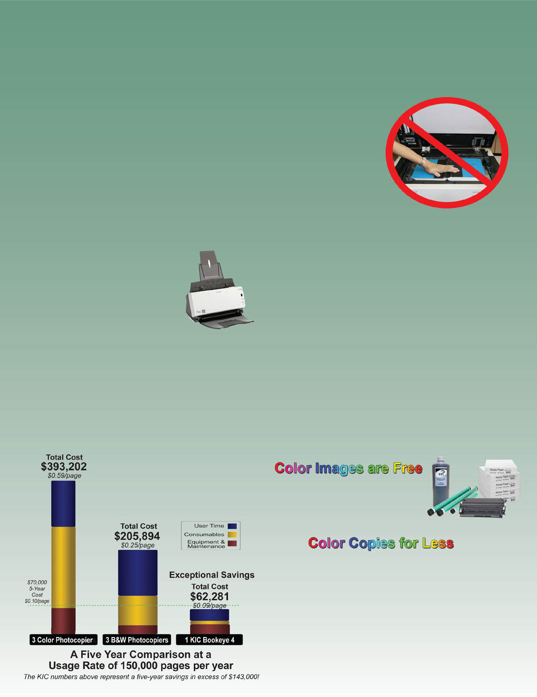KIC Bookeye vs. Copiers - How KIC Compares
Copiers are Outmoded
Since the first KIC was delivered to an academic library in 2004, the days of photocopiers for patron use in academic libraries and even public libraries were numbered. And now with the rapid explosion of tablet computers and electronic readers, the demand in academic libraries for electronic copies has substantially outstripped the de- mand for printed copies. The demand for electronic copies in public libraries is also reaching a tipping point.
The ability to capture virtually unlimited numbers of pages of re- search into a tablet or electronic reader and search through that ma- terial on the Internet with a tablet, eReader or notebook PC that can be used just about anywhere is highly convenient and immensely valuable. In this digital age, academic libraries are compelled to go hybrid for three reasons: 1) the high demand for digital content; 2) their existing print collections contain vast amounts of information that cannot be found on the Internet; and 3) students are receptive to the price of electronic copies - typically free.
So how do the costs of KIC systems compare with those of photo copiers? There are three main factors that keep the cost of photo- copies high: 1) each copy requires paper, toner and ink; 2) photo-
copiers require a lot of maintenance due to the number of moving parts; and 3) all major photocopier brands use a distributed service model.
In contrast, these costs are lower for KIC because KIC has split the scan/copy functions into three separate machines, choosing the best of breed for each. As a result, KIC offers the best book scanners by themselves or with a loose-leaf paper (ADF) scanner. Virtually any off-the-shelf laser or inkjet printer can be added to any KIC system, so you can optimize costs and speeds, and offer affordable color.
ADF attachment scans
40 loose-leaf pages/min
(20 sheets per minute)
KIC Bookeye 4 Scanners vs. Copiers
This graph compares the total costs of one color KIC Bookeye 4 system with three color copiers and with three black and white copiers. Both copiers are the kinds typically seen in academic libraries. One KIC Bookeye 4 is compared with three copiers because its face-up operation yields well over two times the perfor-
mance of a typical copier. The costs are broken into three main areas: equipment and maintenance, consumables, and patron usage time. With KIC, electronic output is assumed to be preferred over print 90% of the time. That ratio has ranged from 75-95% electronic in 2012, but is certain to rise in the future.
No More Book Spine Damage!
Thick books with stiff spines and content that runs deep into the bookfold are often damaged when copied. KIC Bookeye 4 easily captures content without damaging book spines.
KIC automatically removes black
edges, straightens content,
and produces clean, pro-
fessional looking images
- important for elec-
tronic reserves, course
curriculum materials
and research reports.
These automatic image
treatment functions also
save a lot of administrator,
faculty, and student time.
Thick Books...No Problem
KIC Bookeye 4 handles thick books beautifully. Its contour-
finding laser allows it to flatten even the most curved books
and produce text that is clear and undistorted. KIC automati-
cally adds margins for print-ready image quality.
KIC Bookeye Scans 3 Times Faster
Statistics from five million scanning sessions across America revealed a median session length of 23 pages. So, most of the time spent during a KIC session is spent scanning. Face up scanning has been proven to be three times faster than face down scanning.
So why is speed so important?
- It's economical. One KIC Bookeye can replace multiple copiers or other face-down scanning machines.
- It gives patrons another reason to visit your library.
- It's green. The faster it is, the more use it will get and the less the copier will be used.
In the digital world, there is no paper, toner or ink, so libraries rarely charge for images, whether black and white or color.
Over the years, many libraries experimented with color copiers, but could never find a formula that worked. If the fees were low, patrons would copy materials with so much color that the library would spend more on ink than the fees they were collecting. If the fees were too high, the usage would be so low that the cost of the machine couldn't be justified.
KIC calculates the amount of color in an image before it is printed. So the fee for copies with a little bit of color can be the same as the fee for black and white copies. If a copy has a lot of color, the fee can be increased in proportion to the cost of the color ink or toner. This wonderful feature should be a simple, easy byproduct of the digital age, and it is with KIC.
BE4-09
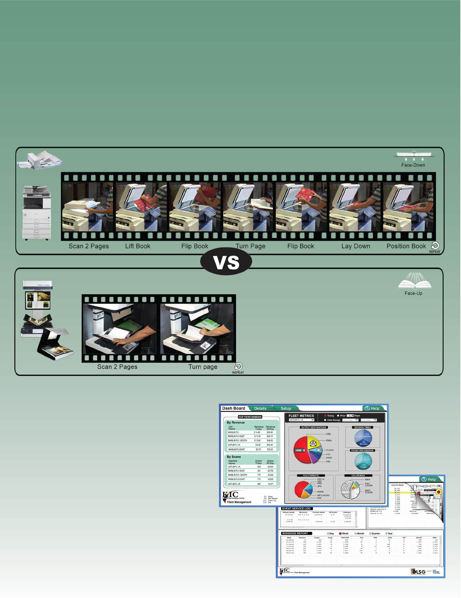Your Choice: Scan Face-Down or Face-Up
Faster is also Easier
Face-up book scanning is far easier on both patrons and books and quite a bit faster than face-down scanning.
Scanning books face-up makes it much easier to keep track of what pages you've scanned. With KIC Bookeye 4 and other face-up scanners, books stay face up, so you can see what you're scanning as you scan it. This extra visibility elim- inates the age old problem of skipping pages and scanning pages out of order which can occur with face-down scanners.
The following photo sequences show the reason that facedown scanning systems are typically 1/3 the speed of faceup systems. The book flipping necessary to scan a book on a face-down scanner like the KIC BookEdge is shown in the photo sequence below. It's a workout both for the book and the patron.
The ergonomic design of the face-up scanning sytems involves only the basic movement required to set a book down and turn a page.
Face-Down Capture
[a seven-step procedure]
Commercial Scanner
Photocopier
Face-Up Capture
[a two-step procedure]
Bookeye 4 V3
Click
The sequence above shows just how much work is required to use a face-down scanner to scan multiple pages.
In contrast, the sequence on the left shows the relative speed and ease of face-up scanning systems that do not require the user to flip over the book being scanned. Once placing the book, the user simply turns pages and presses the scan button (or foot pedal) to scan two pages at a time.
KIC Fleet Management
Monitor Usage Statistics at a Glance
Control,update and monitor your KIC systems remotely. To better serve your patrons, it is important to know which KIC systems are used the most and at what times during the day and week, and which are used the least. All usage statistics can help you to determine the best KIC configuration for each site. And to make it easier to navigate from KIC to KIC system, KIC Fleet Manager allows you to select a particular KIC system via either of two methods: a map or a list.
With over ten years serving libraries, KIC is the most stable product available today. However, DLSG engineers inces- santly work to improve KIC and support the growing changing digital world. DLSG offers improved software re-
gularly, and in order to make it easier to deploy updates, KIC Fleet Manager lets you update KIC systems remotely. For example, a recently released feature lets you turn KIC systems on and off on demand or on a schedule set by a central control panel.
K-23
Digitize on Demand
Born Digital
Unlike Born Digital material which must be purchased on a subscription
basis, converting print to digital with KIC can be done on an unlimited basis.
KIC converts your huge investment in printed
monograms and serials into digitize-on-demand
collections for an insignificant percentage of
the value of their content.
60% of students at US universities
are served by DLSG products
KIC and your print collections
together can yield thousands of
digital copies of whatever students want
BE4-10
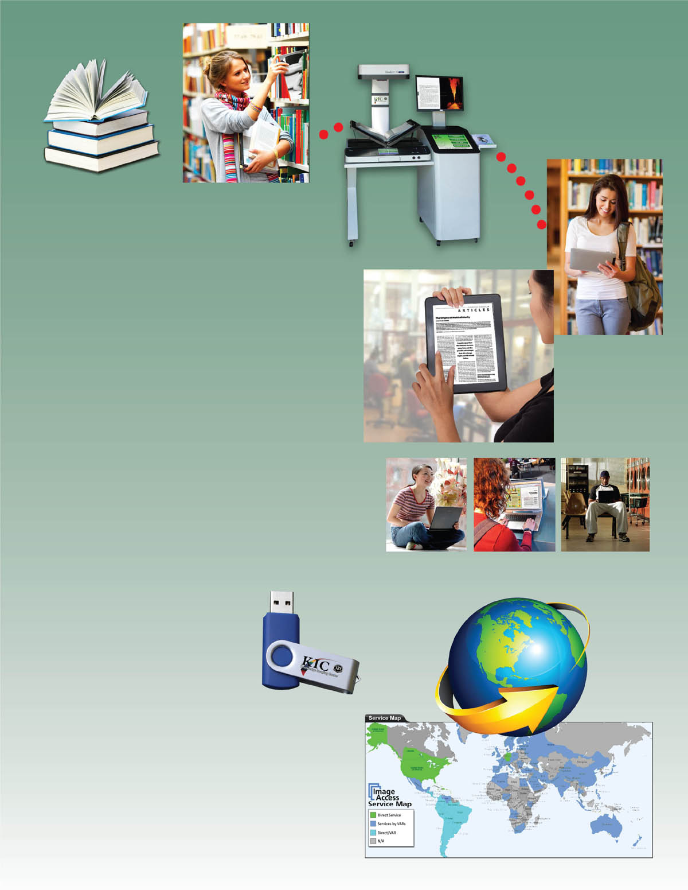The Hybrid Library
To fully earn the 'hybrid library' designation, a library's existing print collections must be available in digital format. KIC systems allow your students and faculty to select material for quick and easy self-serve digiti- zation, providing a valuable conduit between your print collections and patron tablets, PCs, eReaders and smart devices.
KIC's self-serve digitize-on-demand capabilities leverage your library's most valuable assets - its print collections.
Digital images don't have the limitations of physical copies. They can instantly be shared with fellow researchers around the world via email or Cloud, dramatically facilitating collaboration.
KIC avoids the digital rights management conundrum. Each digitization is for a single use, but thousands of patrons can digi- tize content from the same book, yet preserve the book's spine.
Resource Sharing
We know the importance of resource sharing. To help squeeze more value out of your investment, KIC can be configured to support the BSCAN Interlibrary Loan system, the Opus Digitiza- tion Workflow system, and general ad hoc scanning.
Use a USB flash drive to enable other types of scanning at a KIC station and temporarily access shared folders on a network. When you unplug the USB, the KIC station automatically returns to its regular self-serve scanning station functionality.
For general purpose scanning by ad- ministrators and faculty, simply write a department password file to a flash drive. When a user plugs in the USB 'key', KIC recognizes the password and allows the user to save scanned images to shared folders.
Premium Maintenance Plan
Image Access has an unmatched service and support record. It is impossible to affordably provide service personnel living in every city and town across America that are highly trained on the very special technologies needed by libraries. Instead, DLSG designs remote serviceability into its products and has perfected remote diagnosis and when possible, repair.
The resulting savings allows DLSG to frequently and promptly provide loaner/swap-out equipment and to go on site whenever necessary to maintain and repair equipment, minimizing interruptions in service for your patrons.
BE4-11
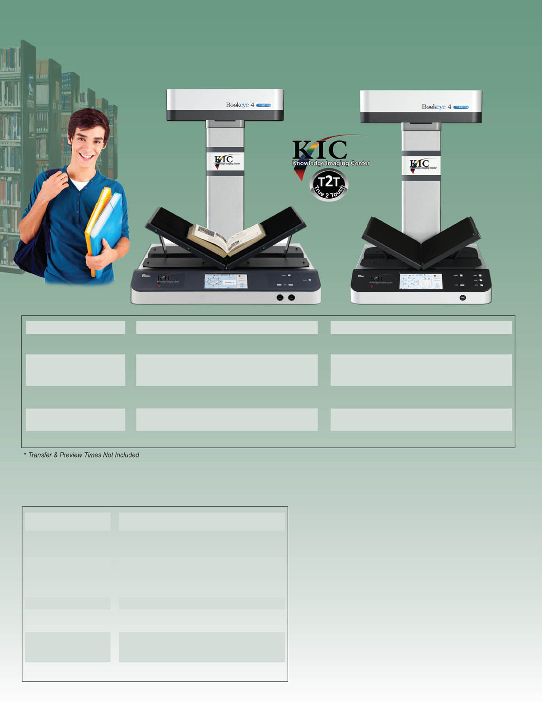Technical Specifications
KIC Bookeye 4 V2
KIC Bookeye 4 V3
Max Capture Area
24.4 x 18 inches
18.9 x 15.3 inches
Resolutions
150, 200, 300, 400, 600 dots per inch
150, 200, 300, 400 dots per inch
Maximum Speed
0.7* sec / 1 page of 8.5 x 11" book
1.1* sec / left & right pages of 8.5 x 11" book
1.8* sec / full bed scan
0.7* sec / 1 page of 8.5 x 11" book
1.1* sec / left & right pages of 8.5 x 11" book
1.4* sec / full bed scan
Dimensions
(HxWxD)
Tabletop Model: 31 x 46 x 26 inches
K-stand Model: 63 x 45 x 28 inches
Tabletop Model: 31 x 43 x 24 inches
K-stand Model: 62 x 48 x 26 inches
Weight
Tabletop Model: 120 lbs
K-stand Model: 310 lbs
(Includes PC)
(Includes PC)
Tabletop Model: 107 lbs
K-stand Model: 220 lbs
(Includes PC)
(Includes PC)
Power Consumption
Approx 230W (Scanning)
Approx 230W (Scanning)
KIC Technical Specifications
(Common to All KIC Models)
Output Color Depth
24 bit color, 8 bit grayscale & 1 bit B&W
Digital File Interfaces
USB 2.0, email, FTP, Web/Cloud storage (e.g.
Google Docs), file folder (for staff & faculty only)
Image Output Formats
PDF, JPEG, PNG and TIFF
rich text and searchable PDF (optional)
Audio Output Formats
MP3 audio text-to-audio (optional)
Printer Interface
10/100/1000 megabit Ethernet or USB 2.0
Printed Output Formats
8.5 x 11", 11 x 17", simplex, duplex, color &
13 x 19" monochrome (printer not included)
Image Treatment Functions
Split pages (left & right), clip, crop, change
brightness/contrast, change resolutions
(dpi), select color, grayscale, or B&W
Lamps
White LED's, no IR/UV emission
- Copy two face-up, full-color pages with a single touch
- Create full color electronic images and/or paper copies
- Review electronic images before saving or printing copies
- Collate by dragging images into proper order with your fingertip
- Select file formats such as PDF, JPEG, PNG, TIFF, even MP3 (audio)
- Simply place your smart device on KIC's optional SmartDock and with
just two touches, you are ready for very high-speed transfer. - Sending scanned images via email is also fast and easy with hot-keys
that are pre-programmed with your institution's base email address. - Output to Google Docs / Google Apps for Education and other cloud-
based tools can also be simplified with pre-programmed hot-keys. - Insert a USB flash memory device and KIC auto-selects USB output.
BE4-12
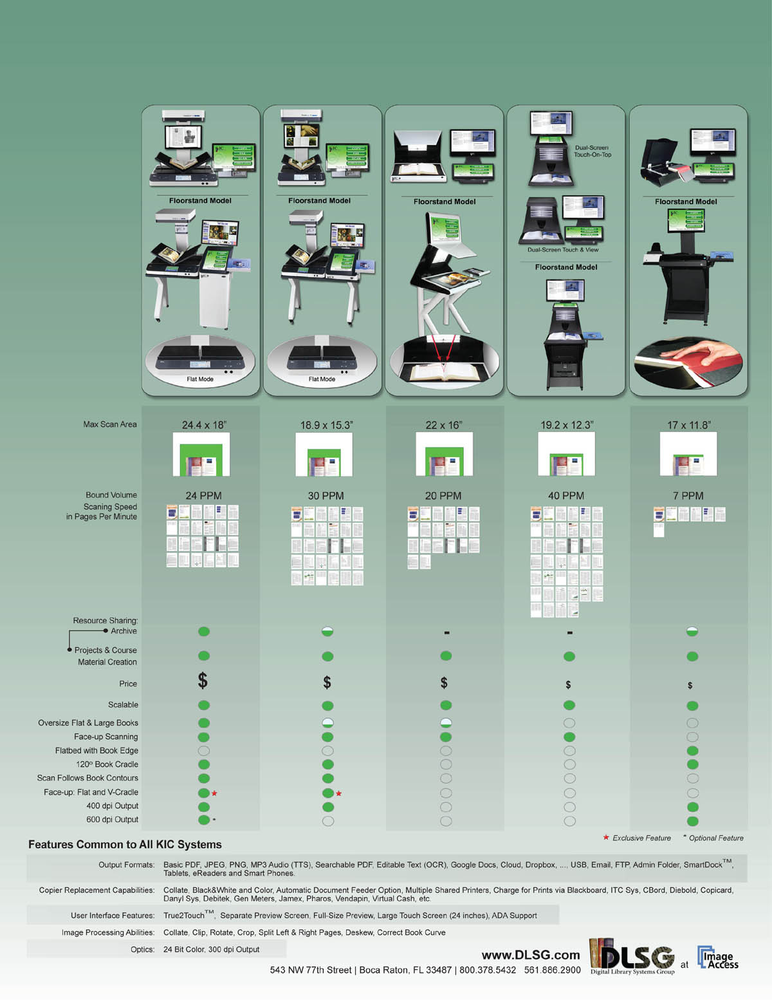The KIC Product Family
Your dollars go futher with our complete KIC product line. Every institution would like to have at least one large KIC system, especially
for reading rooms and reference sections, but not all library floor locations require a large system. Our array of products lets you get as
many bigger systems as you need and fill out the rest with lower-cost systems.
Bookeye 4 V2
Bookeye 4 V3
Click
Click Mini
BookEdge
K-16
Bookeye 4 Scanner
Bookeye 4 - developed particularly with the self-service application market in mind
With the latest member of the Bookeye family, Image Access placed an emphasis on developing a scanner which is compact, easy to operate and competitively priced; to bring high end professional scanning to an even larger population of users. The efficient Bookeye 4 digitizes source material such as bound documents at high speeds in up to 600 dpi optical resolution and formats up to DIN A2.
Over 17 years of electronic, optical and mechanical engineering experience went into the creation and manufacture of the Bookeye 4. The clever mirror mechanism captures the document precisely from edge to edge, whether it is a flat document or a book open at an angle of 120 degrees.
The V-shaped book cradle was optimized to reduce the risk of damage to book spines and binding during digitization. The book cradle holds the open book at an angle of 120 degrees; enough to effectively scan the contents of a page, while gently preserving the original subject matter.
Book scanning made easy
Bookeye 4 has all the advantages of a more expensive standalone device. Outfitted with an integrated color touchscreen and monitor, Bookeye 4 can reach unrivaled scanning speeds and process large volumes of data independent of any external peripheral devices - a typical feature of all Image Access scanners.
It takes approximately three seconds for the Bookeye 4 to capture and process the images of two pages of a DIN A3 sized book scanned at 200 dpi optical resolution. Once the image is on the screen, modifications can be made to scan parameters such as brightness, color or contrast without having to rescan. Users operate the system intuitively, guided by clear and well structured menu commands on the touchscreen. Scanned images can be saved to a USB flash drive, printed on a connected or network printer, uploaded to an FTP Server or even sent via eMail.
Bookeye 4's solid functionality, innovative features and competitive pricing make it an ideal book copier for large groups of users; for example, in a university library. The advantage of a Bookeye 4 over a normal copier is the protective handling of the subject matter to be scanned and the immediate availability of the resulting images to a wider audience. Distribution of the scanned material can be virtually paper free - an ecological argument for Bookeye 4.
Key Features of BookEye 4
- Easy installation via Scan2Net Technology
- Compatible with Windows, Linux, Mac OS, Unix
- Laser-assisted auto-focus and profile detection
- Print on any network printer
- Remote maintenance and analysis
Applications
- Newspapers, periodicals, tabloids, catalogs and magazines
- Books and delicate materials
- Bound and stapled documents
MORE FEATURES
High Speed Scanning:High Speed Scanning: Image Access scanners always run at rated speeds regardless of how powerful your computer is. We do a full scan into the scanner memory at full speed, without any stops. We're the only scanner company that does that. Only the time between scanning and output are dependent upon the transfer speed of the network and the computer, and even our transfer rate is twice as fast as competing products because data is transferred to your workstation at 1 Gigabit speeds, while other scanners use significantly slower transfer rates (1/2 Gigabit or less). Learn more
Works Well With Others:Create JPEG, PDF (both searchable and image-only), or TIFF file formats and save to network (PC, server, FTP).
Easy to Use:Single button scanning, optional foot pedal, built-in display, automatic laser-assisted profile detection and automatic format recognition ensure uncompromised scan results.
High Duty Cycle:High Duty Cycle: Bookeye scanners are designed for high-volume, professional use. Their duty cycles far exceed that of desktop scanners.
Clear, Crisp, Colorful Scans: Fast scanning in B&W, grayscale and color, high-quality resolution of up to 400 dpi. We've made it our business for over 15 years now to be experts in image resolution, and since there is some confusion among users regarding this matter, we've provided a white paper that debunks some longstanding myths. Learn more
State of the Art Illumination: Bookeye's bright white LED illumination lasts significantly longer than other lighting systems. LED lights also consume less power and produce far less heat.
Easy Setup: Bookeye scanners connect over your network using standard IP (Internet Protocol) addresses and can be operated by a standard browser without drivers or add-on cards.
No Warm Up Time: Bookeye scanners are ready to scan anytime you are. Other scanners can require several minutes to warm up before use.
Room to Grow: Firmware upgrades are available online and are directly downloadable to the Bookeye using a standard browser.
Environmentally Responsible: We all know that scanning and saving images to email, USB, etc., rather than photocopying or printing saves paper and toner, but it's hard to get a feel for just how much savings are likely. Click here to see an annual report from MIT describing their savings.
Remote Scanner Management: You're in full control from any browser. Change any and all scanner settings remotely or using Bookeye?s built-in touch screen.
User Statistics Monitoring: Bookeye lets you manage and monitor the usage, statistics and settings of each scanner you own. The reports are automatically uploaded and available online from your web browser.
Document Formats
Document Specification
Performance Specification
4.0 seconds for full bed at 300 dpi
9.2 seconds for full bed at 600 dpi
Technical Specifications
Dimensions and Weight
With Lamps attached
(770 x 660 x 660 mm)
Electrical Specifications
110 W (Scanning)
Ambient Conditions
Accessories
Options and Functions
Upgrade to color
TWAIN interface
Online ICC profiling
Extended Warranty
Scan2PDF
Digital color balance
Integrated ICC profiling Automatic black value
Automatic white balance
Web-based firmware updates
Product Documentation


Call Technical Support at 800.378.5432 to request this guide, email us at support@dlsg.net, or use the contact form.

ENERGY STAR qualified products and practices help you save money and reduce greenhouse gas emissions by meeting strict energy efficiency guidelines set by the U.S. Environmental Protection Agency and the U.S. Department of Energy.
The cETLus Listing Mark is used for products going into the Canadian and US markets. Products with the cETLus mark have been examined and have passed tests determining compliance with device safety requirements. The standards for IT-equipment are UL 60950 for the US market and CSA.C22.2 No 60950 for the Canadian market.
2004/108/EG (Electromagnetic compatibility):
EN 55022
EN 55024
EN 61000-3-2
EN 61000-3-3
2006/95/EG (Low voltage guideline):
EN 60950 (European Standard)
UL 60950 (US Standard)
CSA C22.2 No 60950 (Canadian Standard) for Safety of Information Technology Equipment
FCC Declaration:
FCC 47 CFR Ch.1 Part 15
This device complies with Part 15, Class B of the FCC Rules. Operation of this product is subject to the following two conditions:
- (1) this device may not cause harmful interference, and
- (2) this device must accept any interference received, including interference that may cause undesired operation.
DE 15679937
WEEE is the European Community directive 2002/96/EC on waste for electrical and electronic equipment which, together with the RoHS Directive 2002/95/EC, became European Law in February 2003, setting collection, recycling and recovery targets for all types of electrical goods.
This device is in compliance with the requirements of RoHS-guidelines (Restriction of use of certain Hazardous Substances in Electrical and Electronic Equipment.)
The China Compulsory Certificate mark, commonly known as CCC Mark, is a compulsory safety mark for many products imported, sold or used in the Chinese market.